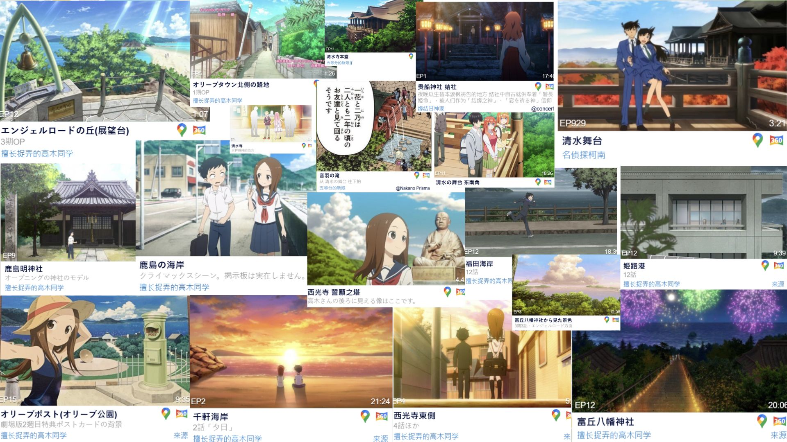

縱貫關西 X 橫躍四國 X
聖地巡禮

TWD 30,000(不含餐)
成團人數:12人
旅遊方式:自駕
去程2026暑(預計7天7夜)
回程2026暑
城市:關東
翔翔旅行社保留最終解釋權
✈ 本次航班
還沒確定
| 去程 |
泰獅
SL394 |
2025/03/18 (二) |
12:10 |
台灣桃園國際機場 |
→ |
16:15 |
東京成田機場 |
| 回程 |
泰獅
SL395 |
2025/03/22 (六) |
17:15 |
東京成田機場 |
→ |
20:20 |
台灣桃園國際機場 |
行程特色
聖地巡禮地點

和歌山
和歌山（Ōmuroyama）和歌山縣位於日本關西地區，是一個融合歷史文化、海鮮美食和溫泉的旅遊勝地，擁有壯麗的自然景觀和悠久的歷史遺跡。以下是幾個和歌山的代表性景點：
特色介紹：
和歌山城
和歌山城是和歌山市的象徵，最初由豐臣秀吉的弟弟豐臣秀長於1585年建造，後來成為德川御三家之一「紀州德川家」的居城。
特色：城內的「天守閣」可以俯瞰整個和歌山市區，春天時櫻花盛開，吸引大量遊客前來賞花。
歷史價值：戰國時代至江戶時代的重要軍事據點，具有深厚的歷史文化底蘊。
黑潮市場
這是和歌山最著名的海鮮市場，以新鮮的海產和現場表演「生鮪魚解體秀」聞名。
特色：可以現場品嚐當天捕獲的鮮魚、壽司、燒烤海鮮等。
推薦美食：和歌山特產「生鮪魚壽司」、新鮮海膽蓋飯。
湯淺醬油釀造所
可以參觀傳統釀造過程，品嚐各種風味獨特的醬油，甚至親手製作醬油。
湯淺醬油以濃郁的風味著稱，受到日本各地料理職人的喜愛。
濱千鳥之湯 海舟
特色介紹:
海景露天溫泉
旅館最大的亮點是「面朝大海的露天溫泉」，溫泉池設計與海天相連，讓人彷彿浸泡在海洋之中。
在日出或日落時分泡湯，可以欣賞到絕美的橘紅色海景。
和風奢華住宿環境
旅館內部採用傳統日式建築風格，結合現代設計，營造出寧靜而優雅的氛圍。
許多房間附設私人露天風呂，讓住客能夠獨享溫泉時光。
多樣化溫泉體驗
除了大浴場和露天溫泉，還有貸切風呂（包租私人溫泉）。
旅館使用的溫泉來自南紀白濱溫泉，這裡是日本最古老的三大溫泉之一，泉水對肌膚有保濕效果，被稱為「美肌之湯」。
休息區與服務
在溫泉區的休息區，提供免費的冰棒和養樂多等飲品，供您在泡湯後享用，放鬆身心
下午時段，旅館在大廳提供免費的迎賓飲料，包括啤酒和燒酒等，讓您在入住時感受到賓至如歸的氛圍
館內設有商店，販售各種當地特色的伴手禮和紀念品，方便旅客選購。
傳統懷石料理
館內提供使用當地新鮮海鮮（如鮪魚、伊勢龍蝦、熊野牛）的高級會席料理。
可以在和式包廂內享用，體驗正宗的日本美食文化。
這家旅館的高級感、私密性與無敵海景，使其成為許多遊客前往和歌山旅遊時的夢幻住宿選擇！
小豆島
小豆島（Shōdoshima）是日本瀨戶內海中的一座美麗島嶼，屬於香川縣，以其橄欖、天使之路、寒霞溪及瀨戶內國際藝術祭聞名。
此外，近年來因為動畫《擅長捉弄人的高木同學》在此取景，吸引了眾多動漫迷前來聖地巡禮。
圖片介紹:
《擅長捉弄人的高木同學》聖地巡禮（左上圖片）
小豆島土庄町是動畫《擅長捉弄人的高木同學》的取景地，許多場景與當地環境相似，成為動漫迷的聖地巡禮景點。
官方舞台探訪地圖（圖片左上）標示了動畫內的取景地，如學校、河堤、商店等，粉絲可以依照地圖探訪。
御朱印（右上圖片）：富丘八幡神社推出了特別版的高木同學聯名御朱印，吸引粉絲參拜與收藏。
約束之丘上的戀人之鐘（左下圖片）
約束之丘（約束の丘）位於小豆島的寒霞溪山頂，是當地著名的浪漫景點，被認定為「戀人聖地」。
這裡設有戀人之鐘（愛之鐘），吸引許多情侶前來敲鐘許願，象徵永恆的愛情。
(之前爬巴哈的文上有看到作者提及單身的人不要敲鐘XD(因為聲音很大會成為整條天使之路的焦點)
絕美景色：
這裡是寒霞溪的最佳觀景點之一，可以眺望壯麗的瀨戶內海、山谷與小豆島全景。
特別是在日出與日落時分，天空染上橘紅色，景色格外夢幻，是求婚或約會的絕佳地點。
寒霞溪
日本三大溪谷之一，以壯麗的懸崖絕景與四季變化聞名，秋天的紅葉景色特別吸引遊客。
可搭乘纜車或健行登頂，從山頂可以俯瞰整個瀨戶內海與小豆島的壯麗景色。
重岩
這是一座位於山頂的奇特巨石，兩塊巨石疊在一起形成神秘景觀，被認為是「日本最強的能量景點之一」。
當地傳說認為來此祈願可以帶來強大的好運與保佑。
鹿島明神社（右下圖片）
當地歷史悠久的神社，是島民信仰的中心，建築樸實而莊嚴。
來訪此地可以感受小豆島的傳統文化氛圍。